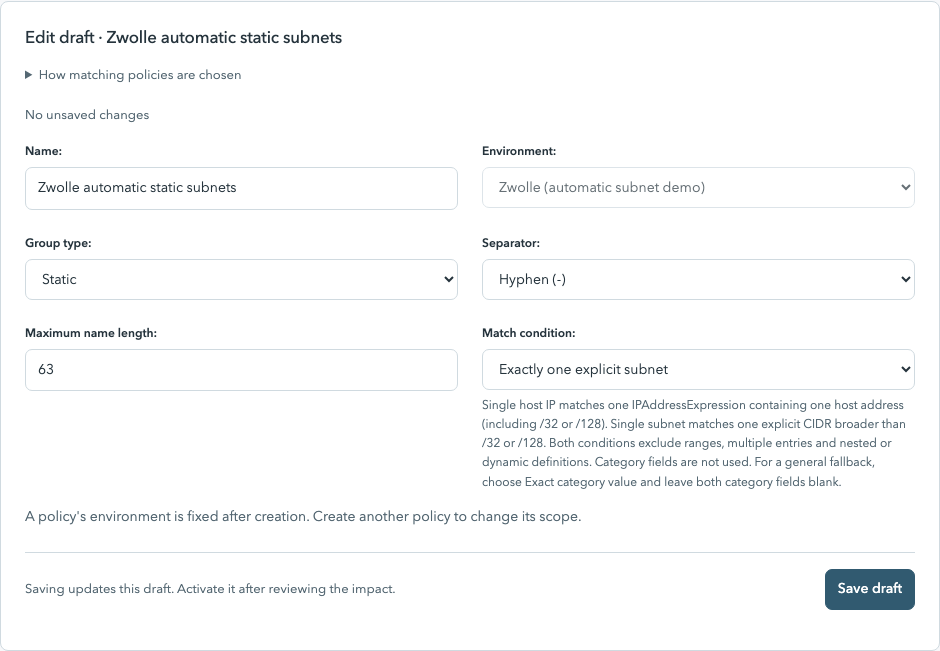
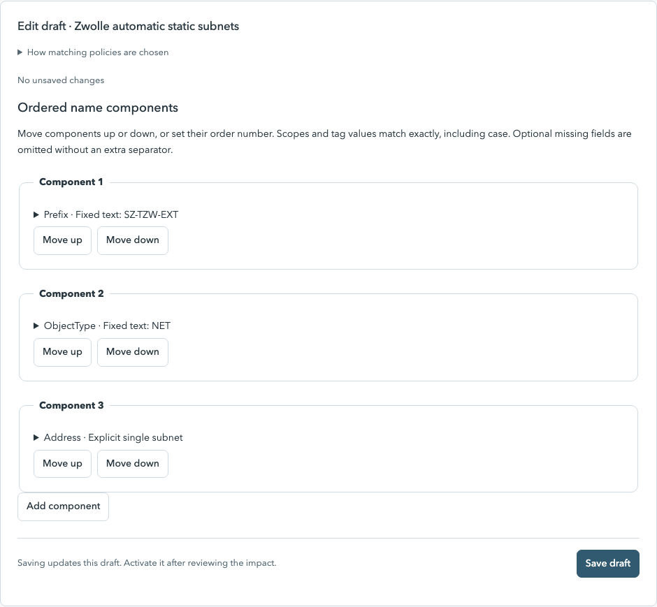
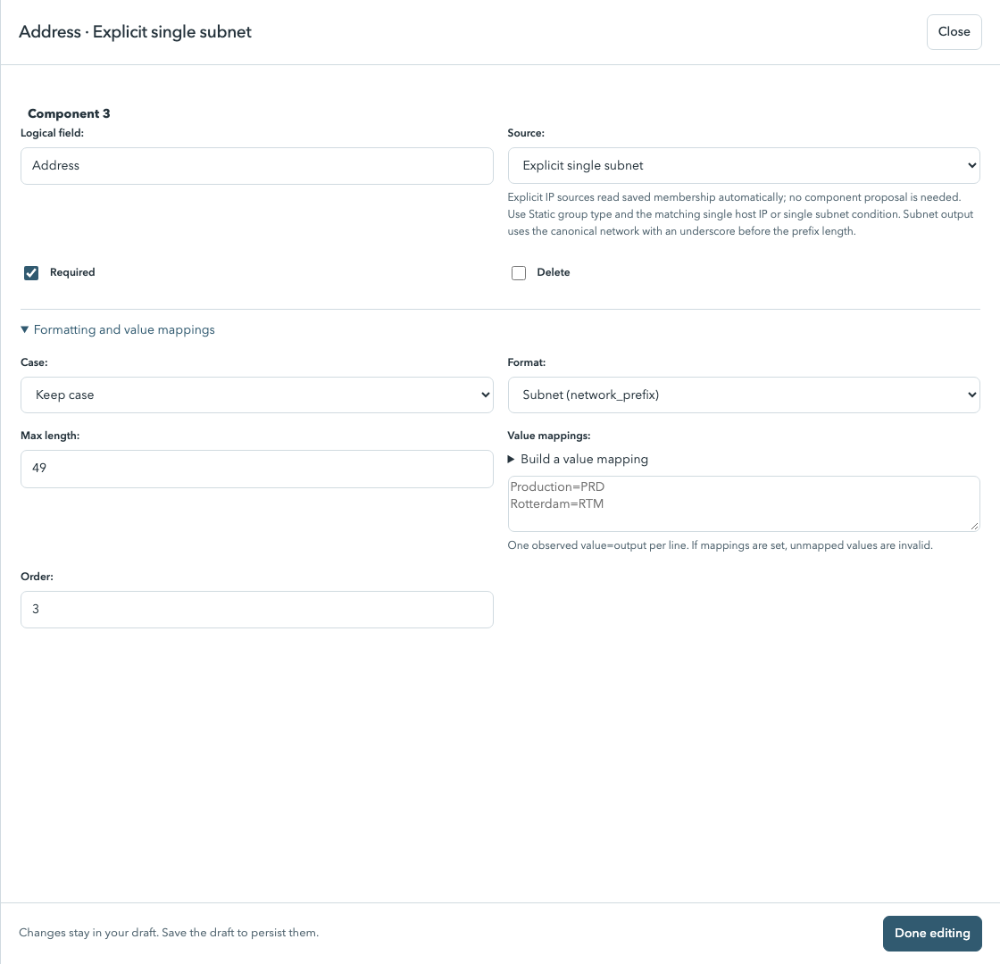
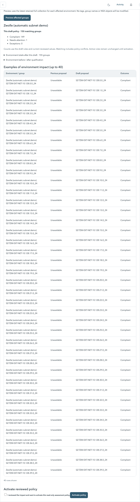
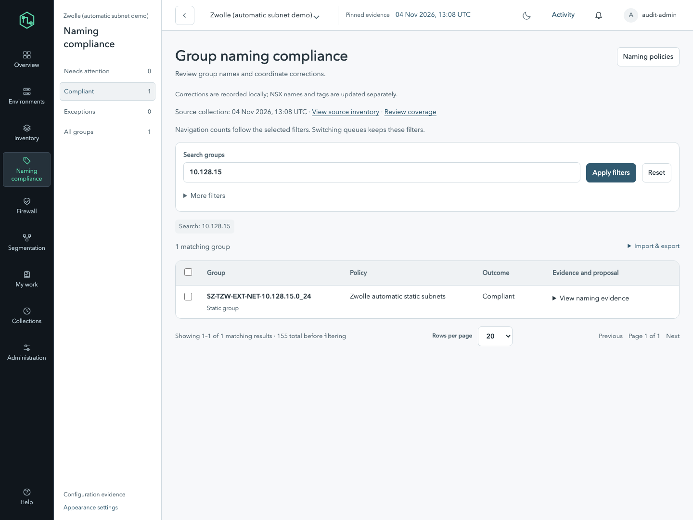
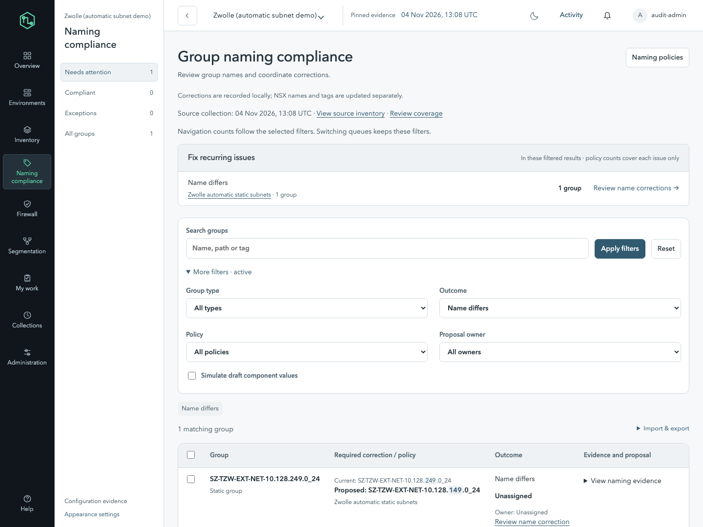

Use the single-subnet condition
Open Naming policies → New policy, or edit your existing static-subnet policy to convert it.
| Field | Value for this example |
|---|---|
| Name | Zwolle automatic static subnets |
| Environment | Zwolle |
| Group type | Static |
| Separator | Hyphen (-) |
| Maximum name length | 63 |
| Match condition | Exactly one explicit subnet |
Category field and Category tag value are hidden and unused for this condition. It covers every eligible single-subnet static group in the selected environment, regardless of its current name. Choose the fixed prefix to suit that scope.

Use fixed text and an automatic address
| Order | Logical field | Source | Value / formatting |
|---|---|---|---|
| 1 | Prefix | Fixed text | SZ-TZW-EXT · UPPERCASE · Letters, digits, hyphens, dots and underscores |
| 2 | ObjectType | Fixed text | NET · UPPERCASE · Letters and digits |
| 3 | Address | Explicit single subnet | Keep case · Subnet (network_prefix) · maximum length 49 · Required checked |
When you select Explicit single subnet, the editor sets the subnet format, Keep case, Required and a sufficient length automatically. Leave its value mappings empty. The canonical network is read from membership and cannot be replaced with a mapped or manually reviewed address. For example, 10.128.196.150/24 generates 10.128.196.0_24. No per-group ObjectType or Address values are needed.
If the editor starts with five default components, repurpose the first three and mark the two unused starter components Delete, then save. If converting the earlier manual policy, change ObjectType from a reviewed scope to Fixed text NET and change Address to Explicit single subnet. The five-component equivalent SZ / TZW / EXT / NET / Address also works.


Review the generated names before activation
- Click Save draft.
- Click Preview impact → Preview affected groups.
- Check the matching count, generated names and any policy conflicts. Environment totals are shown separately.
- Check the reviewed-impact acknowledgement and click Activate policy.
The draft example samples up to 100 saved groups. Full impact preview assesses all groups, including inventories larger than 100. Activation enables assessment only; it does not rename NSX objects.
If another equally specific policy covers these groups, the result is Ambiguous policy. Convert the existing policy or resolve the overlap before activation rather than leaving both active. Existing manual proposals are retained; this automatic source does not depend on them.

Names follow actual membership
Open Naming compliance → Compliant to see correctly named groups, or Needs attention → Name differs to find corrections. The screenshot shows a deliberately incorrect name ending in 10.128.249.0_24 while its actual membership is 10.128.149.150/24. The proposed name correctly ends in 10.128.149.0_24.


Later collections automatically use the current saved subnet definition. Unknown coverage remains provisional. Existing review workflow can still require attention after policy/evidence changes; automatic address extraction does not bypass review or cleanup controls.
Which definitions qualify?
- Exactly one IPAddressExpression containing one valid IPv4 or IPv6 CIDR broader than a host prefix.
- Network host bits are normalized:
10.128.196.150/24becomes10.128.196.0_24. - IPv6 is canonicalized too:
2001:0DB8::123/64becomes2001:db8::_64. Default routes /0 are valid subnets. - Bare hosts, /32 IPv4 and /128 IPv6 entries use the separate host condition.
- Ranges, duplicate/multiple entries, multiple expressions, nested/dynamic/extended membership, malformed values and scoped IPv6 literals are excluded.
Two groups defining the same canonical subnet can propose the same name; collision checks flag that for review. Networks are not combined or summarized. Excluded groups may match another policy or show No applicable policy.
This condition covers all qualifying static subnets in the selected environment, regardless of the current name. Use the fixed prefix only when appropriate for that full scope. Existing host policies remain separate and can stay active.